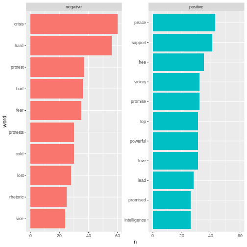

Sentiment analysis
Last updated on 2025-03-19 | Edit this page
Overview
Questions
- How is sentiment analysis conducted?
Objectives
- Learn about different lexicon
- Learn how to add sentiment to words
- Analyse and visualise the sentiments in a text
R
knitr::opts_chunk$set(warning = FALSE)
Sentiment analysis
Sentiment refers to the emotion or tone in a piece of text. It is typically categorised as positive, negative or neutral. Sentiment is often used to analyse opinions, attitudes or emotions in written content. In this case the written content is newspaper articles.
Sentiment analysis is a method used to identify and classify emotions in textual data. This is often done using word list (lexicons). The goals is to determine whether a given text has a positive, negative or neutral tone.
In order to do a sentiment analysis on our data we From the previous section we have a dataset containing a list of words in the text without stopwords. To do a sentiment analysis we can use a so-called lexicon and assign a sentiment to each word. In order to do this we need an list of words and their sentiment. A simple form would be wether they are positive or negative.
There are multiple sentiment lexicons. For a start we will be using
the bing lexicon. This lexicon categorises words as either
positive or negative.
R
get_sentiments("bing")
OUTPUT
# A tibble: 6,786 × 2
word sentiment
<chr> <chr>
1 2-faces negative
2 abnormal negative
3 abolish negative
4 abominable negative
5 abominably negative
6 abominate negative
7 abomination negative
8 abort negative
9 aborted negative
10 aborts negative
# ℹ 6,776 more rowsIn order to use the bing-lexicon, we have to save
it.
R
bing <- get_sentiments("bing")
We now need to combine the sentiment to the words from our articles. We do this by performing an inner_join.
R
articles_bing <- articles_filtered %>%
inner_join(bing)
OUTPUT
Joining with `by = join_by(word)`R
articles_bing
OUTPUT
# A tibble: 6,159 × 6
id president web_publication_date pillar_name word sentiment
<dbl> <chr> <dttm> <chr> <chr> <chr>
1 1 obama 2009-01-20 19:16:38 News promises positive
2 1 obama 2009-01-20 19:16:38 News promise positive
3 1 obama 2009-01-20 19:16:38 News dust negative
4 1 obama 2009-01-20 19:16:38 News cold negative
5 1 obama 2009-01-20 19:16:38 News dawn positive
6 1 obama 2009-01-20 19:16:38 News celebrate positive
7 1 obama 2009-01-20 19:16:38 News inspirational positive
8 1 obama 2009-01-20 19:16:38 News failed negative
9 1 obama 2009-01-20 19:16:38 News resound positive
10 1 obama 2009-01-20 19:16:38 News attacks negative
# ℹ 6,149 more rowsIn R, inner_join() is commonly used to combine datasets
based on a shared column. In this case it is the word
column. inner_join() matches words from a text dataset, in
this case articles_filtered with words in the Bing
sentiment lexicon to determine whether they are positive or
negative.
When we have the combined dataset we can start doing sentiment analysis. A start could be to count the number of positive and negative word used in articles pr president.
R
articles_bing %>%
group_by(president) %>%
summarise(positive = sum(sentiment == "positive"),
negative = sum(sentiment == "negative"),
difference = positive - negative)
OUTPUT
# A tibble: 2 × 4
president positive negative difference
<chr> <int> <int> <int>
1 obama 1499 1800 -301
2 trump 1160 1700 -540This shows that with both presidents there are used more negative words than positive words about both presidents, and that there have been used more negative words about Trump than Obama.
Anothere thing to do would be to look at the 10 most positive and negative words used in the articles.
R
articles_bing %>%
count(word, sentiment, sort = TRUE) %>%
ungroup() %>%
group_by(sentiment) %>%
slice_max(n, n = 10) %>%
ungroup() %>%
mutate(word = reorder(word, n)) %>%
ggplot(mapping = aes(n, word, fill = sentiment)) +
geom_col(show.legend = FALSE) +
facet_wrap(~sentiment, scales = "free_y")
 Here we can see the positive and negative words used in articles
With ´bing´ we only look at the sentiment in binary fashion - a word is either positive or negative. If we try to do similar analysis with AFINN it looks different.
R
install.packages("textdata")
OUTPUT
The following package(s) will be installed:
- textdata [0.4.5]
These packages will be installed into "~/work/R-textmining_new/R-textmining_new/renv/profiles/lesson-requirements/renv/library/linux-ubuntu-jammy/R-4.4/x86_64-pc-linux-gnu".
# Installing packages --------------------------------------------------------
- Installing textdata ... OK [linked from cache]
Successfully installed 1 package in 6.3 milliseconds.R
library(textdata)
R
afinn <- get_sentiments("afinn")
OUTPUT
Do you want to download:
Name: AFINN-111
URL: http://www2.imm.dtu.dk/pubdb/views/publication_details.php?id=6010
License: Open Database License (ODbL) v1.0
Size: 78 KB (cleaned 59 KB)
Download mechanism: https ERROR
Error in menu(choices = c("Yes", "No"), title = title): menu() cannot be used non-interactivelyR
articles_afinn <- articles_filtered %>%
inner_join(afinn)
ERROR
Error: object 'afinn' not foundR
articles_afinn %>%
group_by(president) %>%
summarise(sentiment = sum(value))
ERROR
Error: object 'articles_afinn' not foundR
articles_afinn %>%
group_by(president, value) %>%
summarise(sentiment = sum(value)) %>%
ungroup() %>%
ggplot(mapping = aes(x = value, y = sentiment, fill = president)) +
geom_col(position = "dodge")
ERROR
Error: object 'articles_afinn' not foundR
articles_afinn %>%
count(president, word, value, sort = TRUE) %>%
ungroup() %>%
group_by(president, value) %>%
slice_max(n, n = 3) %>%
ungroup() %>%
mutate(word = reorder(word, n)) %>%
ggplot(mapping = aes(n, word, fill = president)) +
geom_col(show.legend = FALSE) +
facet_wrap(~value, scales = "free_y") +
labs(x = "Contribution to sentiment",
y = NULL)
ERROR
Error: object 'articles_afinn' not foundKey Points
- There are different lexicons
- It is possible to add sentiments to words
- It is possible to visulise the sentiments